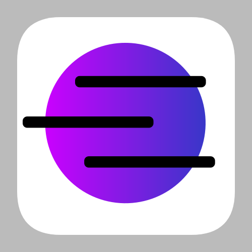

A change to the CelOS brand look
- 11/06/21
After a lot of inspection we decided to change the original look and feel of our logo and the brand look of CelOS as a whole.
CelOS was intended to be a unique Linux experience which was easy for anyone to use, whether you were new to Linux or an advanced user. However, we felt as though our previous logo did not fit the theme and energy that CelOS needed to convey. We felt that the previous logo for CelOS looked rather bland, so we decided to overhaul our logo whwhile maintaining a similar visual style (to our previous one.)
Another key issue with our logo is that the corners and edges would become pixelated when scaled up or down.

• Our previous logo
As the release for CelOS 1 grows closer and closer we decided to work on our logo and change our brand look. Our new logo is more distinct, recognisable and vibrant. We want people to feel at home whilst using CelOS, and so our brand image should reflect that.
There was some anxiety within the developer team about the new logo, as we wanted to add symbolism within our logo. The logo has some unique symbolism which we truly believe represents CelOS. We feel like our new logo symbolises resilience and growth as the image represents clouds (black lines) leaving a planet and its atmosphere (purple sphere.)
More importantly, we are changing our brand look because we felt like it was time for a change. The old logo, at least in my opinion, needed a bit of an update as CelOS has evolved into a different distribution along its development. Countless amounts of feedback on the distribution have inspired us to change and evolve along with CelOS.

• Our new logo
We want to thank everyone who has helped CelOS grow and evolve by actively supporting the project, without your support, help, testing, issue reporting and pull requests the distribution would not be where it is today. We are happy to announce the change in our brand look as we evolve into the next phase of developing CelOS.
Many thanks, Adam Salt
- Lead Developer of CelOS & Cob:web Lead